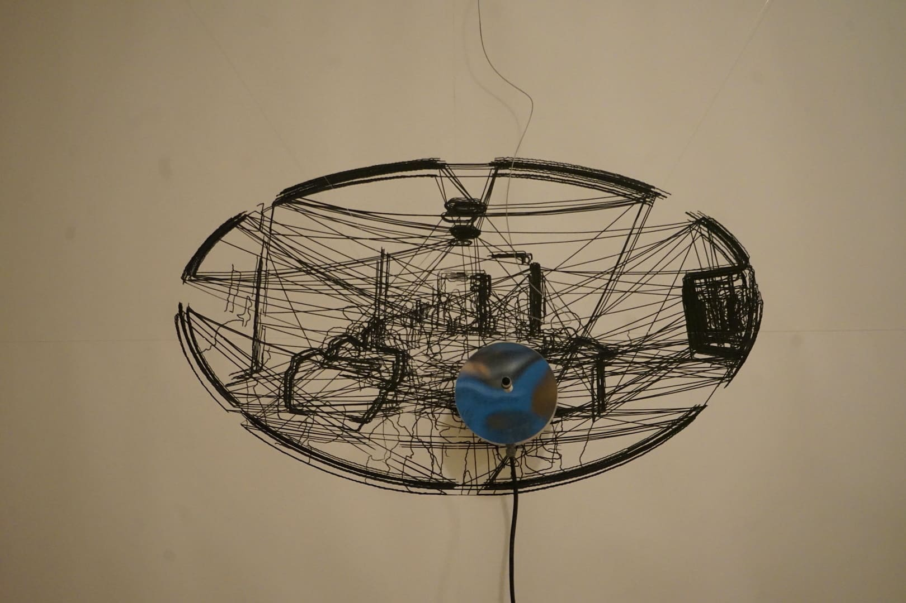
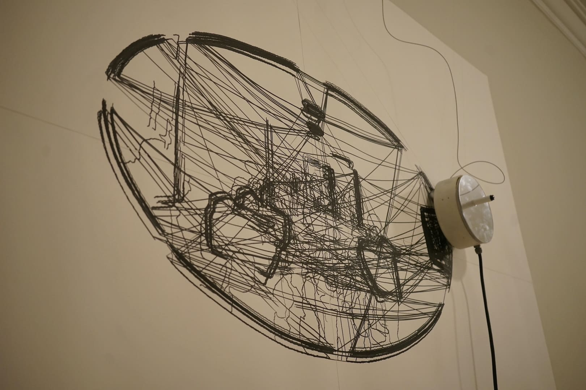
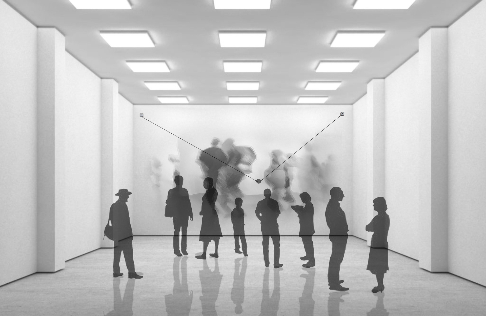
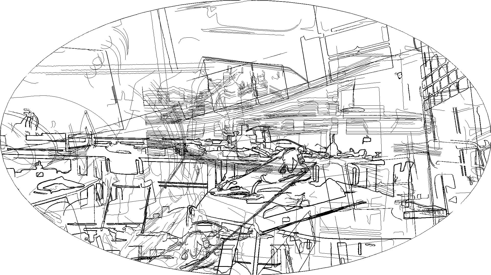

Spatiotemporal Mirror
Long-exposure drawing system compressing space and time into a single evolving surface.
Long-Exposure Imaging
V-Plotter Mechanism
Image Processing
Temporal Compression
Real-Time Spatial Capture
TIME | 2019
AUTHORS | Po-Yao Wu, Hao-Ming Huang
EXHIBITIONS |
- 2019 International Exhibition of Electronic Art SYNTOPIA | Athens, Greece.

MOTIVATION |
Spatiotemporal Mirror explores how space and time can be recorded as a single evolving image. The installation captures long-exposure photographs of its surroundings while simultaneously redrawing each video frame on the wall using a V-plotter. Over time, these layers accumulate into a dynamic surface that compresses motion, presence, and temporal change into two dimensions. Unlike instant-response interactive artworks, this piece behaves like a slowly developing photographic film—revealing traces of bodies, movements, and spatial narratives as they unfold. The work invites viewers to recognize themselves as part of the temporal record, strengthening their relationship with the exhibition space through the visible imprint of their presence.

APPROACH |
A camera continuously captures long-exposure images of the installation’s front area, extracting frame information in real time. A motor-driven V-plotter mounted on a large wall redraws each frame as line-based imagery, layering new traces atop previous ones. This cumulative process allows the wall to function as a temporal canvas, storing spatial information and motion over extended periods.
As objects or visitors move through the monitored space, their forms gradually emerge within the layered drawing—producing a hybrid of photography, data capture, and mechanical mark-making. The installation requires a flat wall (minimum 300×200 cm) for precise plotter motion and a stable 220V power supply.
   